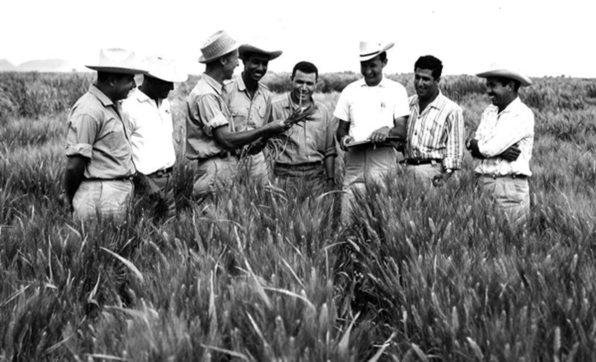

Dr Norman Borlaug
The man who saved a billion lives
Dr norman Borlaug, third from the left, trains biologists in Mexico on how to increase wheat yields-part of his life-long war on hunger.
Here's a time line of Dr. Borlaug's life:
- 1914-Born in Cresco, lowa
- 1933-Leaves his family's farm to attend the University of Minnesota, thanks to a Depression era program know as the "National Youth Administration"
- 1935-Has to stop school and save up more money . Works in the Civilian Conservation Corps, helping starving Amaricans. "I saw how food changed them", he said."All of this left scars on me."
- 1937-Finishes university and takes a job in the US Forestrey Service
1938-Marrieds wife of 69 years Margret Gibson. Gets laid off due to budjet cuts